Monitoring K3 Puskesmas Kota Pontianak
Panduan lengkap penggunaan sistem pelaporan Keselamatan & Kesehatan Kerja (K3) untuk dua jenis akun: petugas Puskesmas yang mengisi laporan bulanan, dan admin Dinas Kesehatan yang memantau seluruh Puskesmas.
Memulai & Login
Setiap petugas Puskesmas dan admin Dinas Kesehatan login lewat halaman yang sama. Sistem otomatis mengarahkan ke dashboard yang sesuai berdasarkan jenis akun.
- 1Buka halaman login
Masukkan Username dan Password yang diberikan oleh admin Dinas Kesehatan (untuk akun Puskesmas) atau yang sudah disediakan sejak awal (untuk akun Dinas).
- 2Tekan tombol "Masuk"
Sistem akan mengenali jenis akun secara otomatis dan membawa ke Dashboard Puskesmas atau Dashboard Dinas Kesehatan.
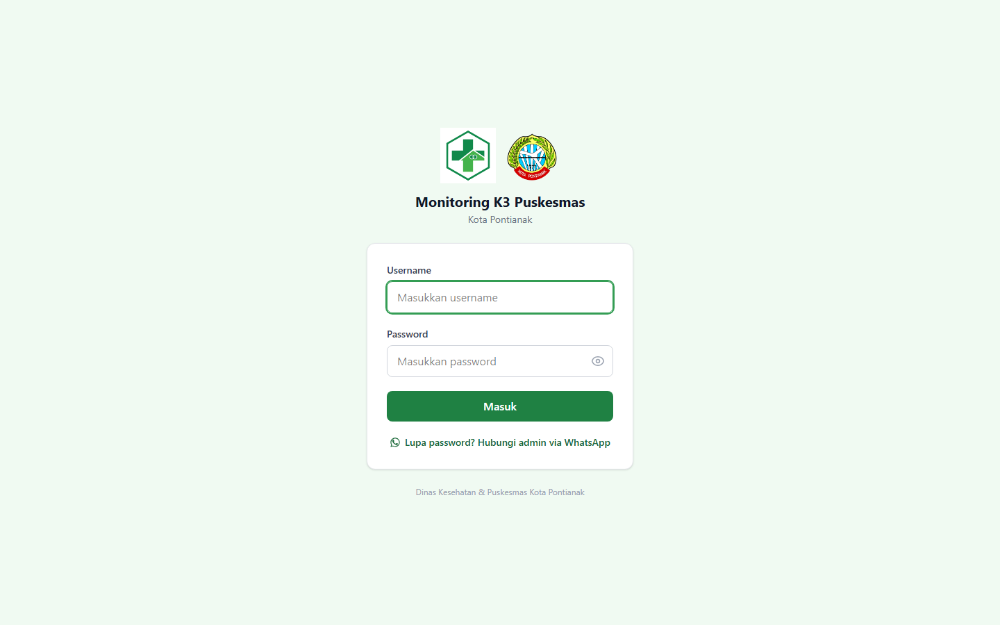
Dashboard
Halaman pertama setelah login. Menampilkan status pengisian bulan berjalan dan skor K3 Puskesmas.
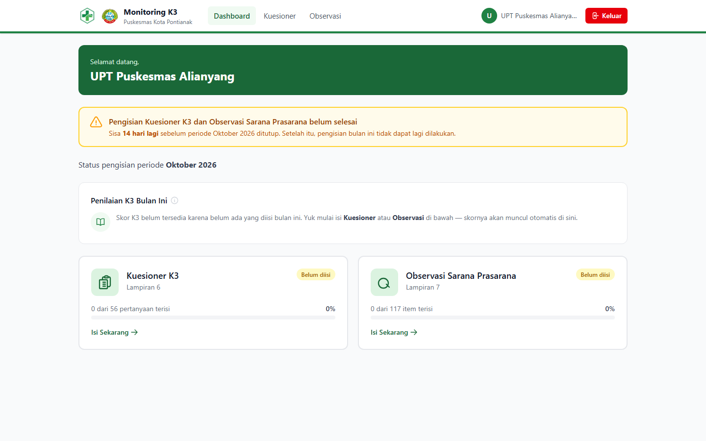
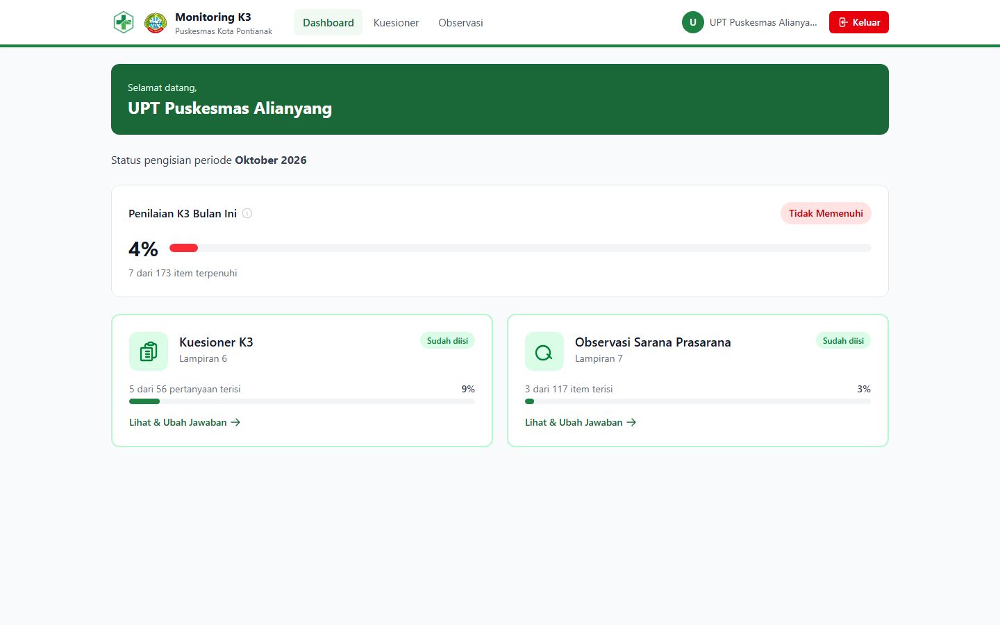
Dashboard juga menampilkan peringatan kuning/merah kalau pengisian belum selesai mendekati akhir bulan — pengisian otomatis terkunci begitu bulan berganti, jadi jangan sampai terlewat.
Mengisi Kuesioner K3
Lampiran 6 — 56 pertanyaan seputar kebijakan, pencatatan, identifikasi risiko, pemantauan, dan kebutuhan sistem digital K3, terbagi dalam 5 kategori (A–E).
- 1Buka menu "Kuesioner"
Setiap pertanyaan dijawab dengan menekan tombol Ya atau Tidak.
- 2Lampirkan bukti pendukung (opsional, tapi disarankan)
Tiap pertanyaan punya tombol "Tambah Lampiran/Bukti" — bisa unggah lebih dari satu file (foto, PDF, dokumen) sebagai bukti pendukung jawaban. File tersimpan otomatis begitu diunggah.
- 3Tekan "Simpan"
Akan muncul konfirmasi berisi ringkasan berapa pertanyaan yang sudah terjawab, sebelum data benar-benar disimpan.
- 4Lanjutkan kapan saja
Belum sempat isi semua? Tidak masalah — tekan Simpan dengan jawaban yang sudah ada, lalu lanjutkan isi sisanya kapan saja selama masih dalam bulan yang sama.
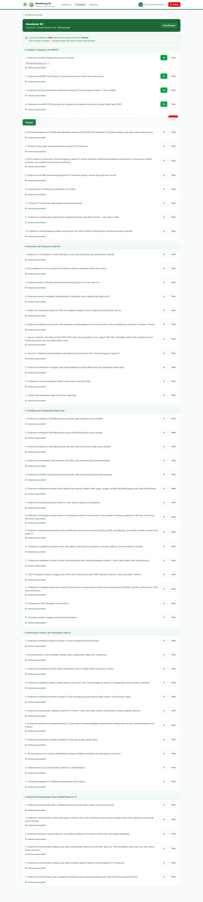
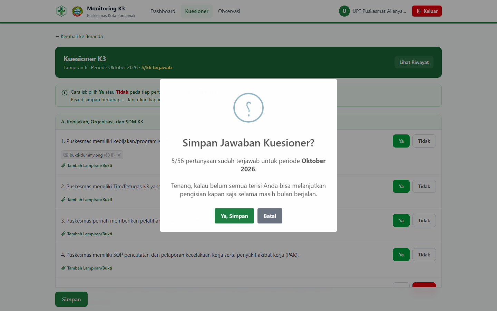
Mengisi Observasi Sarana & Prasarana
Lampiran 7 — 117 item pemeriksaan fisik sarana & prasarana K3, dari proteksi kebakaran sampai manajemen fasilitas, mengacu pada instrumen Permenkes & Akreditasi Puskesmas.
- 1Isi tanggal observasi
Tanggal saat pemeriksaan fisik dilakukan, diisi sekali di atas form.
- 2Tandai tiap item Ada atau Tidak Ada
Kalau Ada, pilih juga kondisinya (Baik/Buruk, atau Baik/Rusak Ringan/Rusak Berat — tergantung jenis item) dan boleh tambahkan keterangan temuan.
- 3Lampirkan foto bukti
Sama seperti Kuesioner, tiap item bisa dilampiri foto kondisi sarana/prasarana sebagai bukti.
- 4Simpan
Konfirmasi muncul sebelum data tersimpan, sama seperti Kuesioner.
Melihat Riwayat Pengisian
Puskesmas bisa melihat seluruh riwayat pengisian bulan-bulan sebelumnya kapan saja — hanya saja, data bulan yang sudah lewat tidak bisa diubah lagi, sifatnya baca-saja.
- 1Tekan "Lihat Riwayat"
Tombol ini ada di pojok kanan atas halaman Kuesioner maupun Observasi.
- 2Pilih periode yang ingin dilihat
Daftar seluruh bulan yang pernah diisi akan muncul, diurutkan dari yang terbaru.
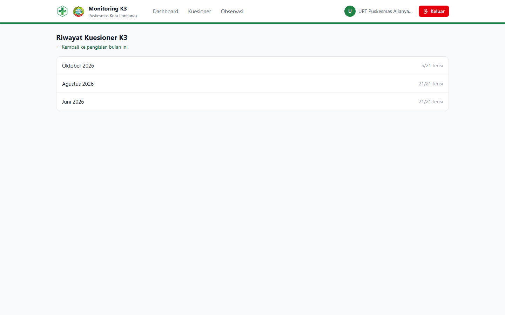
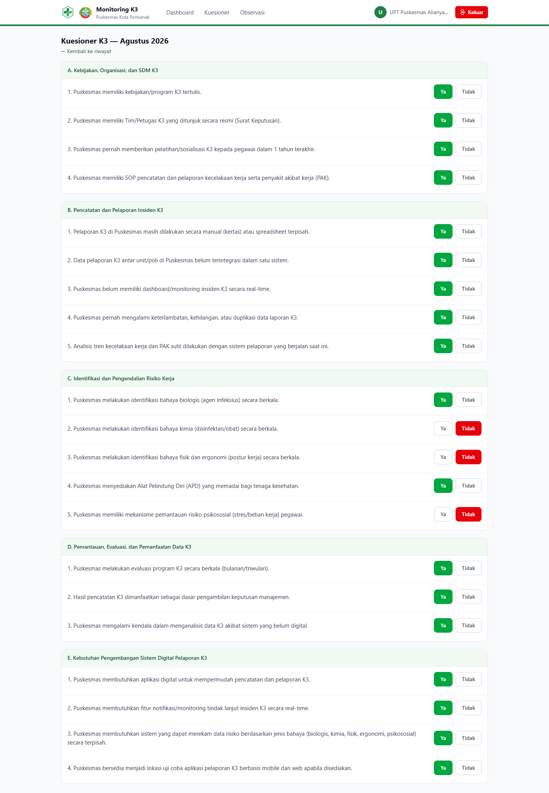
Lupa Password
Petugas Puskesmas tidak bisa mengganti password sendiri lewat aplikasi — ini memang sengaja dibatasi, hanya admin Dinas Kesehatan yang berwenang mengatur ulang password tiap akun Puskesmas.
Dari halaman login, klik tautan "Lupa password? Hubungi admin via WhatsApp". Pesan akan otomatis terisi dan tinggal dikirim ke admin untuk diminta password baru.
Dashboard
Ringkasan cepat kondisi seluruh Puskesmas Kota Pontianak untuk periode yang dipilih.
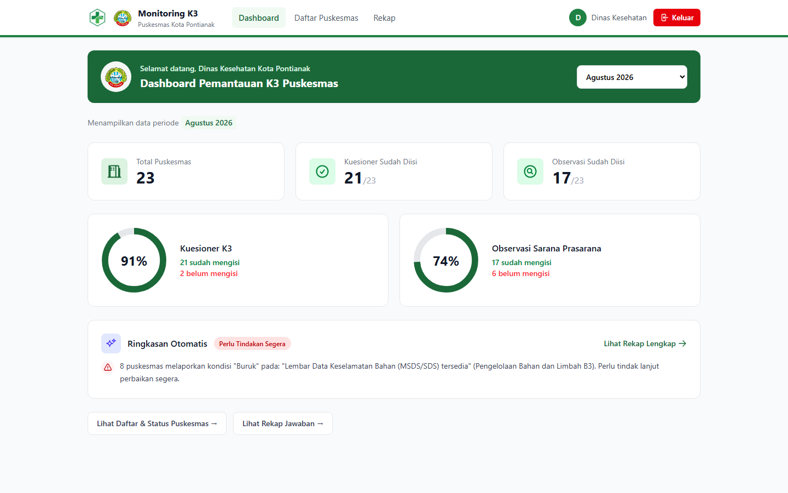
| Bagian | Fungsi |
|---|---|
| Filter periode | Pilih bulan & tahun di kanan atas — seluruh halaman Dinas ikut mengikuti periode yang dipilih saat berpindah menu. |
| Status pengisian | Jumlah Puskesmas yang sudah/belum mengisi Kuesioner dan Observasi pada periode tersebut. |
| Ringkasan Otomatis | Cuplikan temuan paling penting (mis. banyak Puskesmas belum isi, atau kondisi sarana buruk) — klik untuk lihat rincian lengkap di halaman Rekap. |
Daftar & Tambah Puskesmas
Menu "Daftar Puskesmas" menampilkan seluruh 23 Puskesmas Kota Pontianak beserta status pengisian dan skor K3 masing-masing.
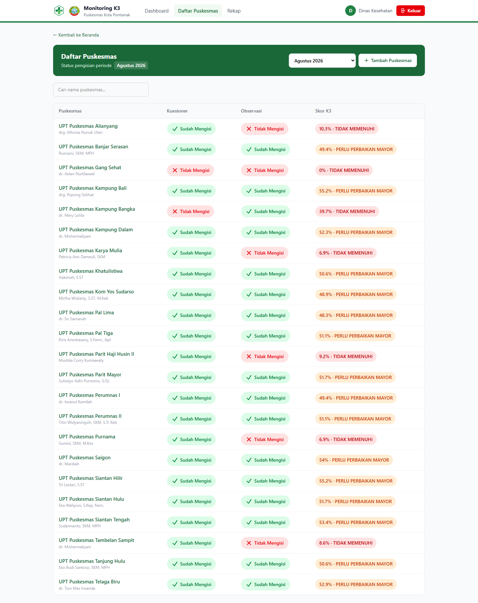
Menambahkan Puskesmas Baru
Tekan tombol "Tambah Puskesmas" di pojok kanan atas, isi data Puskesmas (nama, alamat, kepala Puskesmas, kontak). Sistem otomatis membuatkan akun login untuk Puskesmas tersebut.
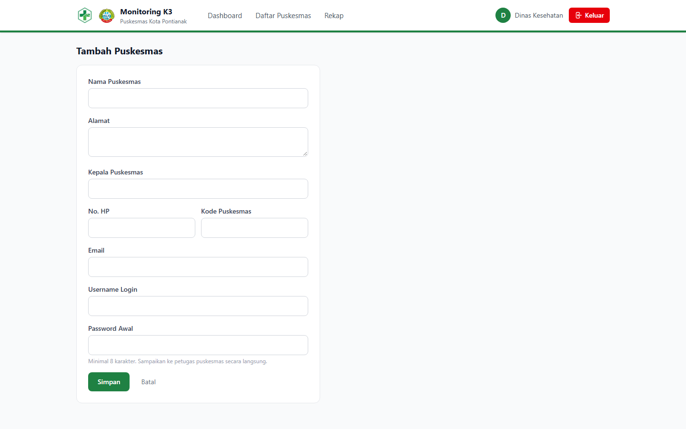
Detail Puskesmas & Skor K3
Klik nama Puskesmas mana pun dari Daftar Puskesmas untuk melihat profil lengkap, tren skor K3 antar bulan, dan riwayat pengisian.
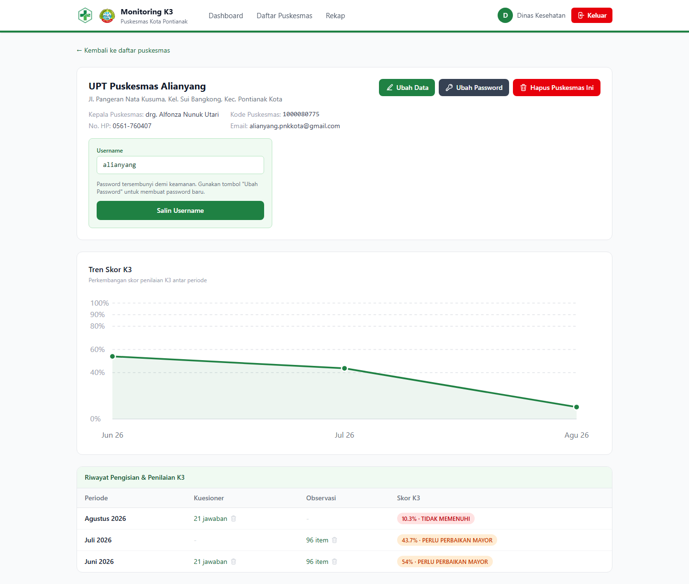
Memahami Skor K3
Skor dihitung otomatis: jumlah jawaban Ya (Kuesioner) ditambah Ada (Observasi), dibagi total item, dikali 100%.
| Skor | Kategori |
|---|---|
| < 40% | Tidak Memenuhi |
| 40–59% | Perlu Perbaikan Mayor |
| 60–79% | Memenuhi Sebagian |
| 80–89% | Memenuhi Standar |
| ≥ 90% | Unggul / Best Practice |
Mengubah Password Puskesmas
Tekan tombol "Ubah Password" di halaman detail Puskesmas untuk membuatkan password baru — berguna saat petugas Puskesmas lupa password dan menghubungi lewat WhatsApp.
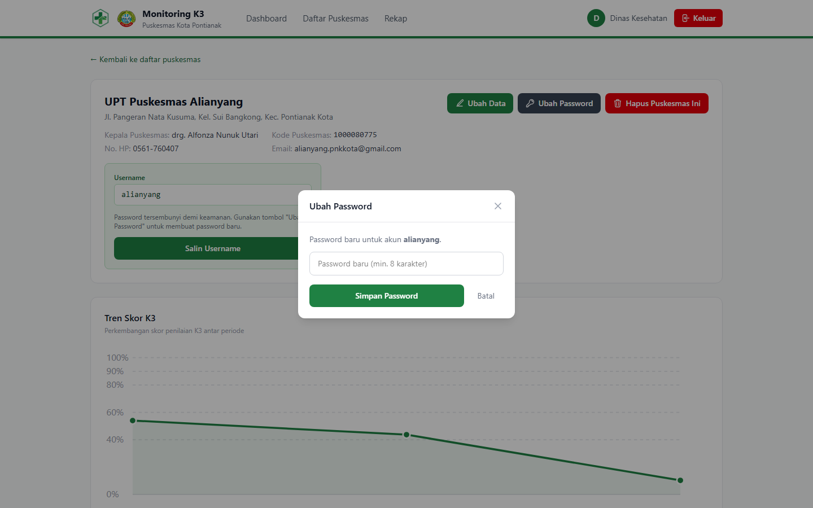
Melihat Jawaban Satu Periode
Klik salah satu baris pada tabel riwayat untuk melihat seluruh jawaban Kuesioner atau Observasi Puskesmas tersebut pada bulan itu, lengkap dengan lampiran buktinya.
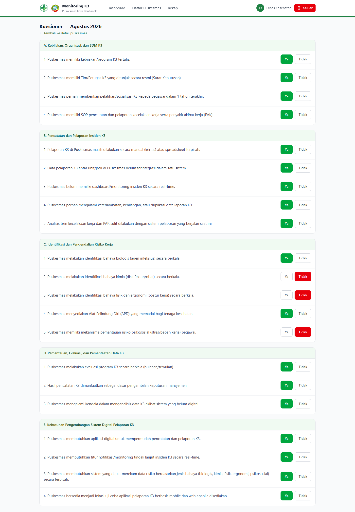
Rekap Jawaban Seluruh Puskesmas
Halaman paling lengkap untuk memantau kondisi K3 lintas Puskesmas sekaligus — rekap per pertanyaan, penilaian K3 agregat, dan rekomendasi tindak lanjut otomatis.
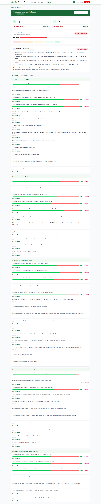
Siapa yang Belum Mengisi
Tekan "Lihat daftar" pada kartu Kuesioner atau Observasi untuk melihat nama-nama Puskesmas yang belum mengisi periode tersebut.
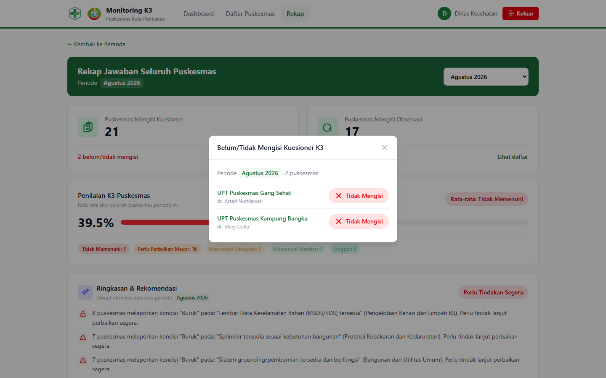
Penilaian K3 Puskesmas (Agregat)
Menampilkan rata-rata skor seluruh Puskesmas serta jumlah Puskesmas di tiap kategori. Klik salah satu badge kategori untuk melihat daftar nama Puskesmas di kategori tersebut, diurutkan dari skor tertinggi.
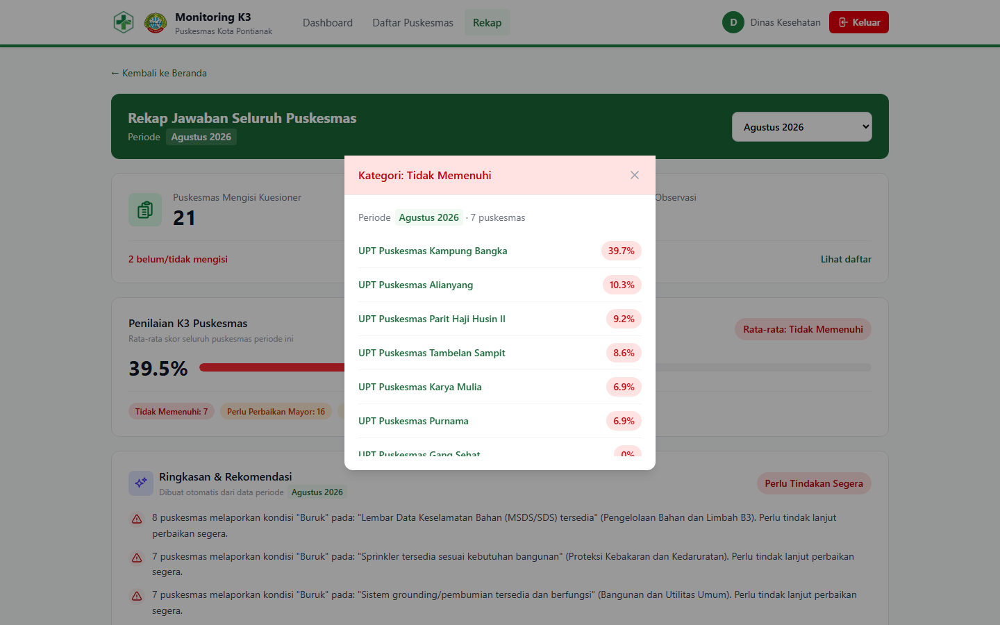
Rekap per Pertanyaan
Tab Kuesioner K3 dan Observasi Sarana Prasarana menampilkan setiap pertanyaan/item beserta proporsi jawabannya di seluruh Puskesmas. Klik "Lihat per puskesmas" pada pertanyaan mana pun untuk melihat Puskesmas mana saja yang menjawab Ya, Tidak, atau belum menjawab sama sekali — lengkap dengan lampiran buktinya.
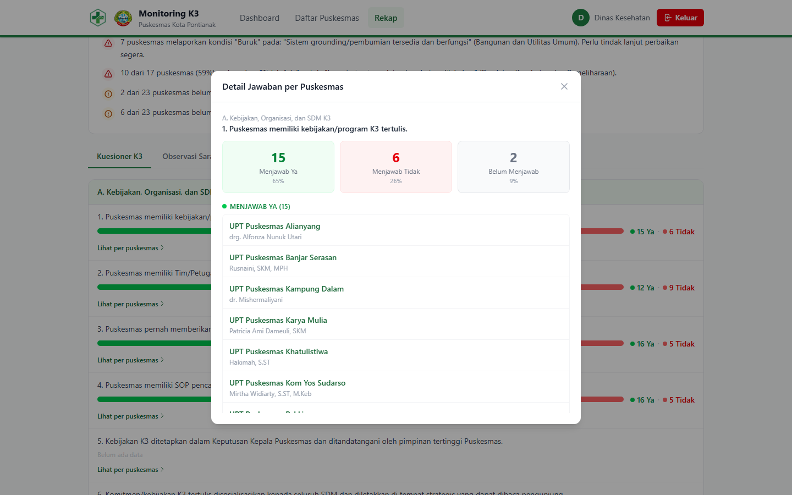
Mengelola & Menghapus Data
Admin Dinas Kesehatan bisa menghapus data pengisian Kuesioner atau Observasi suatu Puskesmas untuk periode tertentu — misalnya saat data dimasukkan keliru dan perlu diisi ulang dari awal.
- 1Buka halaman Detail Puskesmas
Cari baris periode yang datanya ingin dihapus pada tabel "Riwayat Pengisian & Penilaian K3".
- 2Tekan ikon tempat sampah
Terletak di samping link "X jawaban"/"X item" pada kolom Kuesioner atau Observasi.
- 3Konfirmasi penghapusan
Sistem akan meminta konfirmasi karena tindakan ini permanen — seluruh jawaban dan lampiran bukti periode tersebut ikut terhapus.
Pertanyaan Umum
Hal-hal yang sering ditanyakan tentang penggunaan sistem ini.
Kenapa saya tidak bisa mengubah jawaban bulan lalu?
Pengisian Kuesioner dan Observasi hanya bisa diubah selama masih berada di bulan berjalan. Begitu bulan berganti, data bulan sebelumnya otomatis terkunci dan hanya bisa dilihat (baca-saja) oleh akun Puskesmas. Admin Dinas Kesehatan tetap bisa menghapus data periode mana pun bila diperlukan.
Apakah pengisian bisa ditunda dan dilanjutkan nanti?
Bisa. Tekan "Simpan" kapan saja walau belum semua pertanyaan terjawab, lalu lanjutkan mengisi sisanya di kesempatan lain — selama masih dalam bulan yang sama.
Berapa banyak file yang bisa dilampirkan per pertanyaan?
Hingga 5 file sekaligus per unggahan, masing-masing maksimal 5MB. Format yang didukung: gambar (JPG, PNG, WEBP), PDF, dan dokumen Office (DOC, DOCX, XLS, XLSX).
Apakah skor K3 memperhitungkan kondisi "Rusak"?
Tidak. Skor hanya menghitung ketersediaan (Ya/Ada vs Tidak/Tidak Ada). Kondisi rusak tetap dicatat dan ditampilkan terpisah di halaman Rekap untuk bahan tindak lanjut Dinas Kesehatan, tapi tidak mengurangi skor.
Siapa yang bisa mengganti password akun Puskesmas?
Hanya admin Dinas Kesehatan, lewat halaman Detail Puskesmas → tombol "Ubah Password". Petugas Puskesmas yang lupa password cukup menghubungi admin lewat tautan WhatsApp di halaman login.